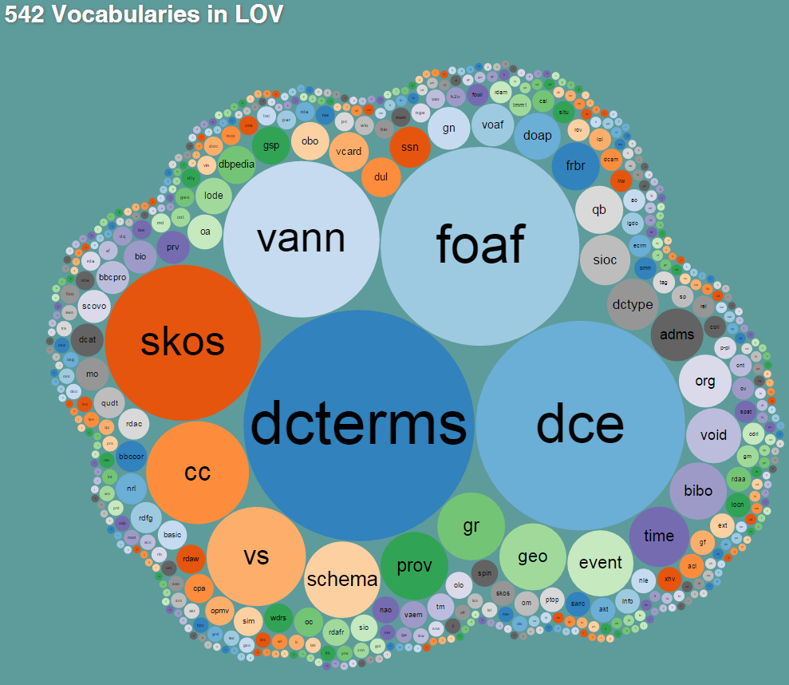

GeoYASGUI
The GeoSPARQL Query Editor and Result Set Visualizer
Wouter
Beek wouter@triply.cc,
Erwin
Folmer e.j.a.folmer@utwente.nl,
Laurens Rietveld, John Walker


Kadaster Data Platform: data.pdok.nl
Triply: triply.cc
Overview
- YASQUE (query editor)
- YASR (result set visualizer)
- YASGUI (web service)
- Data Stories
- Conclusion
YASQUE
Yet Another SPARQL Query Editor
https://github.com/OpenTriplyProblem statement
Existing GeoSPARQL endpoints do not support the programmer in writing queries.
SotA example
DBpediaThings a programmer needs
- syntax highlighting
- feedback for syntax errors
- autocompletion
- automatic namespace declarations
- indentation, bracket matching
- persistent state
Autocompletion
Linked Open Vocabularies
Automatic namespace declarations
Prefix.cc
FOSS
- CodeMirror (link)
- Flint SPARQL Editor (original link, now dead)
Open Standards
YASR
Yet Another SPARQL Result Set Visualizer
https://github.com/OpenTriplyProblem statement
Existing GeoSPARQL endpoints do not display (intermediary) query results in a helpful way.
SotA example
DBpediaResult set formats
Map view auto-detects geo results
FOSS
Open Standards
YASGUI
Free web service
Components:
- YASQE
- YASR
- tabs
- URL shortener

Uptake
Uptake: Triple Stores
- Apache Jena
- OntoText GraphDB
- RDF4J (previously: OpenRDF Sesame)
- ClioPatria
Uptake: Data Tools
Uptake: Data Publishers
Data Stories
A simple GeoSPARQL templating language for presentation purposes.
Easily integrates with HTML5
100% GeoSPARQL compatible

For more Data Stories…
Thank you!
Mail: wouter@triply.cc
WWW: wouterbeek.github.io
Triply: triply.cc
Kadaster Data Platform: data.pdok.nl